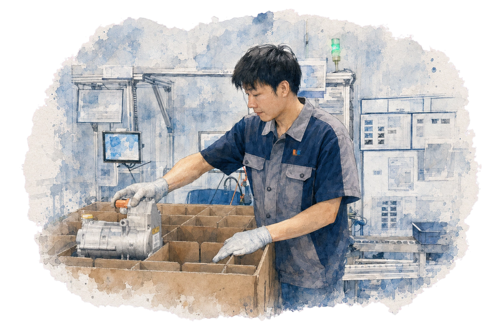
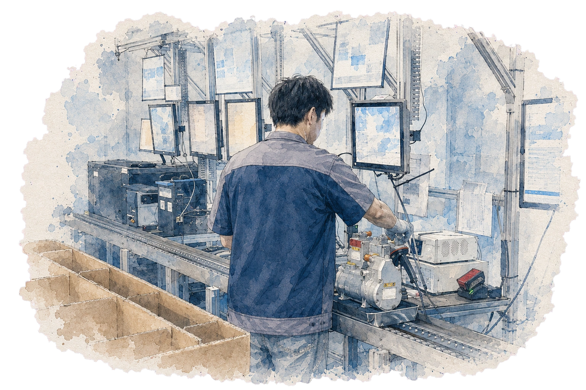
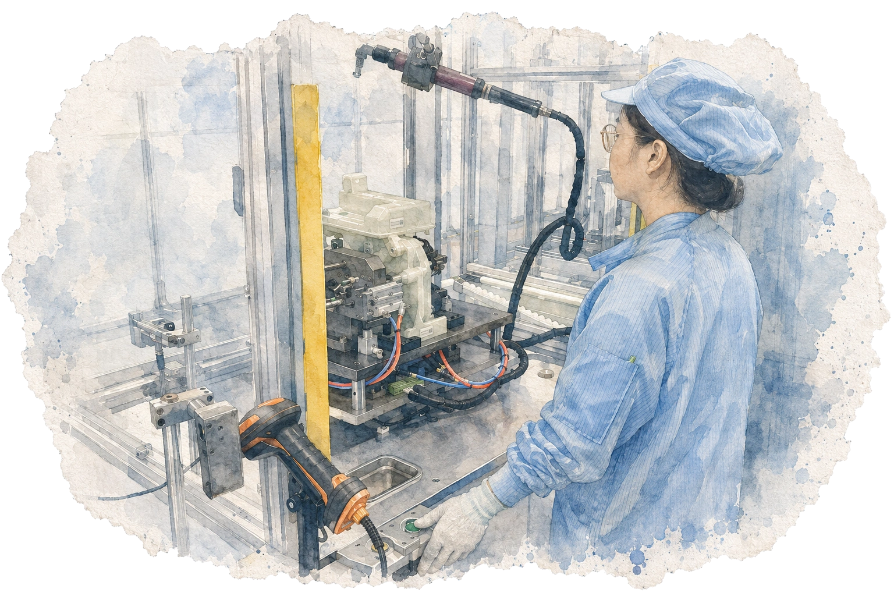
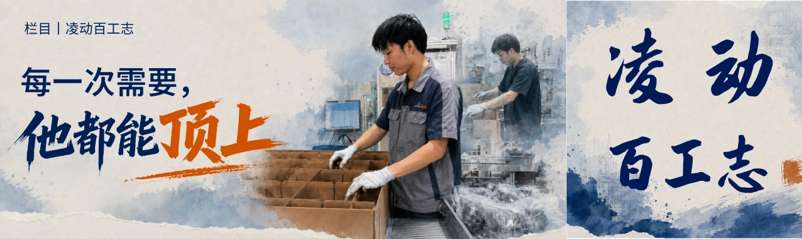

01 / 晨阳 · 罗玉国
每一次需要，
他都能顶上
从永康基地支援到杭州的临时交付任务，岗位和场景不断变化；反复出现的，是现场需要补位时，他愿意站出来。
这篇故事围绕具体的跨岗位支援展开，让“可靠”不只停留在评价里。
哪里需要，就去哪里。SUPPORT / ADAPTABILITY



官网和产品内容可以讲清一家企业做什么；人物故事让读者看见，这些工作由怎样的人完成。
《凌动百工志》从荣誉与岗位线索出发，通过采访和真实工作细节，找到不同员工各自值得被讲述的故事。


制造业有许多值得讲述的工作，却未必都能通过产品和技术信息直接呈现。员工每天如何解决问题、守住质量、支援同事，也构成了人们理解一家企业的方式。
人物栏目如果只重复“认真负责、爱岗敬业”，不同的人就会变成同一套表述。《凌动百工志》希望在这些形容词之外，找到每个人真实的工作习惯与判断。
先看见一个具体的人，
再讲他所代表的工作。
选题从已被关注的员工开始，但故事不能止步于荣誉称号。采访里更值得追问的，是具体场景、重复发生的动作，以及员工自己如何理解这份工作。
同样来自真实工作现场，支援、复核与终检各自有不同的叙事入口。
从永康基地支援到杭州的临时交付任务，岗位和场景不断变化；反复出现的，是现场需要补位时，他愿意站出来。
这篇故事围绕具体的跨岗位支援展开，让“可靠”不只停留在评价里。
哪里需要，就去哪里。



从测试、组装到终检，岗位在变化，她反复坚持的工作习惯没有变：做完以后，再确认一次。
用具体动作写质量意识，读者才能看到“认真”究竟发生在哪里。
不因熟练省略确认。终检下线位于产品离开产线之前。岗位的关键，是在最后一次确认中判断产品是否可以交付。
确认状态、检查细节、发现异常：人物主题就藏在这些每天要做的选择里。
让最后一道工序，有一个具体的人。
文章、主视觉与公众号封面一起完成表达。三篇稿件共享栏目识别，但每个人的主题和视觉重心都从各自的工作细节里生长出来。



写人物时，最容易先有“优秀”的结论，再去寻找能证明结论的素材。
这组稿件让我更重视顺序：先听员工讲自己的工作，再从发生过的具体事件中确定故事主题。企业希望传递的东西，也因此有了可以被感知的人和动作。
先把人写清楚，
企业的样子才会慢慢清楚。
围绕人物栏目，参与选题判断、员工采访、人物故事结构、内容编辑和视觉方向协同。